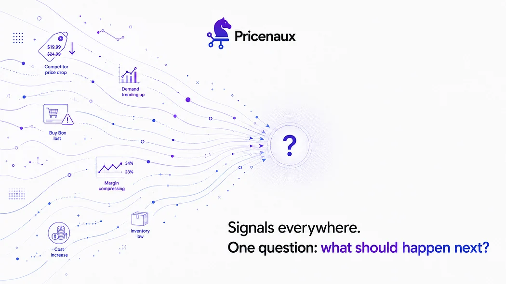
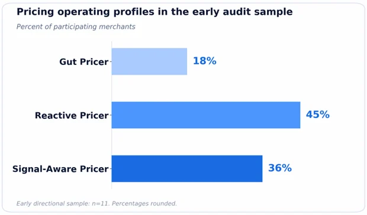
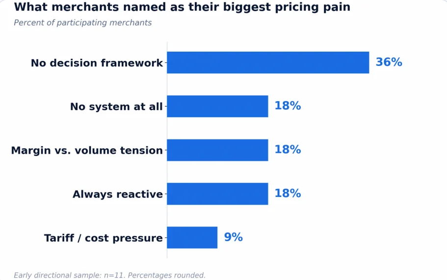
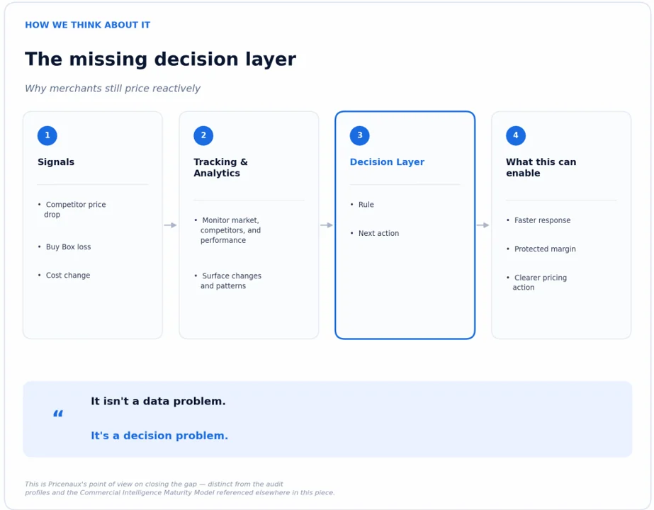

Nermin Sad · CEO & Co-founder
Nermin Sad · CEO & Co-founder
Signals can be visible without the next pricing action being obvious. Pricenaux’s view: the real gap is often between detecting a change and deciding what to do next.
When we opened the Pricenaux Free Pricing Audit, we asked merchants nine questions about how they actually set prices, not how they’d describe it in a pitch to an investor, but what really triggers a price change, how margins get tracked, and whether they could explain their last pricing decision if we asked them to.
We built the audit primarily as a merchant diagnostic, not as a research study. Its job is to give merchants a four-minute mirror. But when enough merchants look into the same mirror, patterns begin to emerge, and we’re now far enough in to share the first directional read.
A note on the sample, before anything else.
Early directional findings based on 11 completed merchant audits, plus one internal test entry that has been excluded from the analysis. Participants were self-selected, responses were self-reported, and the findings should not be interpreted as representative of the broader e-commerce market. Percentages are rounded to the nearest whole number, and every identifying detail has been removed , no store names, no URLs, nothing traceable back to a specific respondent. We’ll revisit these findings as participation grows.
The strongest signal: most merchants are still Reactive, not Signal-Aware
To interpret the early results, we grouped respondents into three pricing operating profiles: Gut Pricer (instinct-led), Reactive Pricer (tracking without proactive rules), and Signal-Aware Pricer (structured monitoring). These audit profiles describe how merchants currently approach pricing decisions. They are complementary to — but distinct from — the broader Pricenaux Commercial Intelligence Maturity Model introduced in our earlier research.

Early Pricenaux Pricing Audit results show Reactive Pricers as the largest operating profile, followed by Signal-Aware and Gut Pricers.
Nearly half of participating merchants — 45% — landed in the Reactive profile. They’re watching the market, in most cases manually, but they tend to act only after a competitor has already moved, a Buy Box has already been lost, or a cost increase has already forced the question. Another 18% landed in the Gut Pricer profile: pricing mainly from memory, with no clear floor and no structured system.
What stood out more than the distribution itself was the gap that remained even among the highest-scoring respondents. Some were already using automated margin tracking, weekly competitor reviews, and rules-based repricing triggers — yet their answers still showed a recurring gap between detecting a change and translating it into a clear next action.
Most merchants in the sample had built some form of pricing infrastructure. The recurring gap was the connective layer between the signal and the decision.
It isn’t a data problem. It’s a decision problem.
We asked every respondent to name their single biggest pricing pain. We expected the answers to cluster around visibility — not knowing what competitors charge, not seeing margin in real time. That’s not what came back.

Among merchants in the early Pricenaux Pricing Audit sample, ‘no decision framework’ emerged as the most commonly reported pricing pain.
“No decision framework” was the single most common answer, named by 36% of respondents — more than any other pain point. Another 18% reported having no system at all; 18% named margin-versus-volume tension; 18% described themselves as always reactive; and 9% pointed to tariff or cost pressure. Read the explanations behind those answers and a pattern repeats: merchants have spreadsheets, they check competitors by hand or with a basic tool, and they know their landed costs. What they often lack is a rule that turns a specific signal — a competitor drops 8%, a product loses the Buy Box, a tariff lands — into a specific, pre-decided response.
That’s the same gap we wrote about when we first launched Pricenaux: analytics tells you what happened. It takes a different layer to tell you what to do next. Seeing that pattern emerge across the sample made it more concrete than any argument we could have made ourselves.
Running two channels doesn’t just double the work — it can double the blind spot
Nearly half of respondents — 45% — sell on both Shopify and Amazon. In the audit’s automated recommendations, this group most consistently triggered a multi-channel risk warning: pricing decisions made under different channel pressures can drift apart if they are not checked against a shared margin floor. That does not mean every multi-channel respondent is actively creating channel conflict. It means the audit repeatedly identified the conditions under which it can happen.
The risk is easy to understand. Amazon pricing decisions may be made under Buy Box pressure, in the moment, while Shopify pricing often moves on a slower, separate cadence. Without a shared margin floor sitting underneath both channels, the two pricing motions can drift apart without anyone deliberately deciding they should.
Channel conflict doesn’t have to be a strategy. It can emerge from two reasonable decisions, made separately, that never get compared.
More than a quarter couldn’t explain their most recent pricing-related loss
The audit’s final question asks merchants to attribute their most recent pricing-related loss — a margin hit or a sales dip — to a specific cause. Three answers tied for the top spot at 27% each: the price was too high, they lost the Buy Box, or — the one we found most telling — they simply didn’t know why.
“Don’t know why” isn’t necessarily a data-collection failure. The gap appeared when respondents tried to trace a specific loss back to a specific cause. That’s the exact pattern we described in our very first post on this: revenue hides pricing mistakes, and margin exposes them, but only if something is watching the margin closely enough to notice when it moves.
What most merchants already had going for them
Most respondents in the early sample were not starting from zero. They already had some combination of margin tracking, competitor checks, or repricing rules. The missing piece was the connective layer between information and the decision it should produce.
That’s a different starting point than “merchants don’t track anything.” For many businesses in the sample, the next step isn’t a wholesale rebuild. It’s adding a floor, a rule, or a trigger to work they’re already doing.
The audit findings above are descriptive. The framework below reflects Pricenaux’s point of view on how merchants can close the gap between signals and action.

Pricenaux’s point of view on the missing decision layer: moving from market signals and analytics toward clearer rules and next actions.
Founder reflection
What struck me most, reading the audits side by side, wasn’t any individual answer. It was how similar the underlying story was, even though the businesses themselves were nothing alike: different catalog sizes, different channels, different categories. Across that variety, the same pattern kept surfacing: merchants can be disciplined enough to track the numbers and still remain one structural gap away from turning that discipline into a real defense.
We built the audit because we believed that gap was common. An early, self-selected sample is not proof of the broader market. But it is initial evidence, in merchants’ own words, that the problem we started Pricenaux to solve is appearing where we expected to find it.
— Nermin Sad, CEO & Co-founder, Pricenaux
Where this goes next
We’ll keep publishing these percentages as the sample grows , and we’ll explain the methodology and sample limitations clearly each time. If you haven’t taken the audit yet, it takes about four minutes, costs nothing, and the findings above should give you a rough sense of where you might land before you start.
Start the Free Pricing Audit →
Then tell us: when you look at the audit profiles above, which one is honestly closest to how your business prices today , and what’s the one thing standing between you and the next level?
Have a perspective on this topic?
Continue the discussion with Pricenaux and other operators on LinkedIn.
Join the LinkedIn DiscussionHow mature is your pricing process?
Benchmark your pricing approach, identify decision gaps, and see where stronger guardrails or intelligence could protect margin.